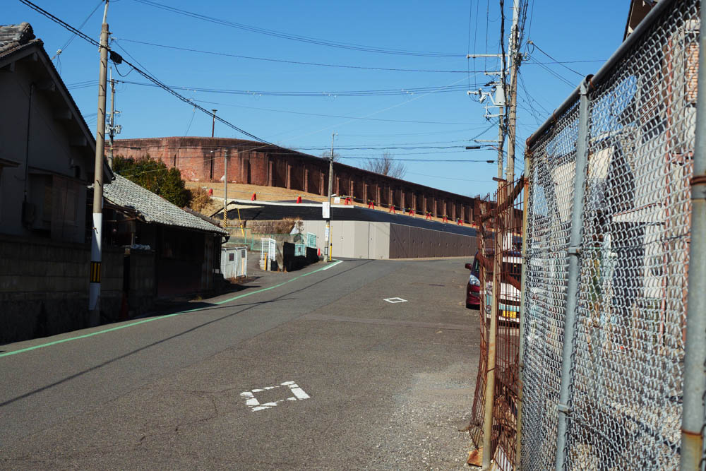
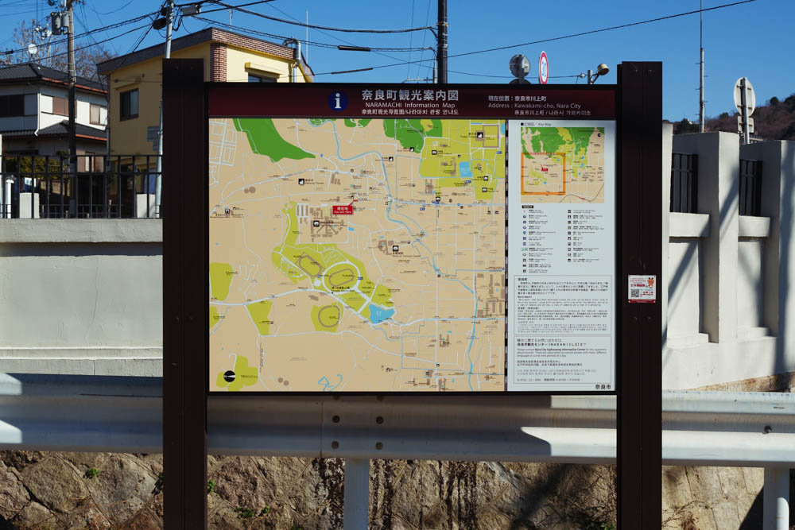

計算ミスを無くすには（共通テスト前夜）
2025/01/18
結論：計算ミスは無くせない
どうぇ～～～！？
そう思った人、
はい、計算ミスを無くす方法なんてないです。無いというよりもし存在しているなら全員知っているはずなので...今のところ無いんだろうなって感じですね～。
でもまぁ「無くせない」と割り切ることが計算ミスへの一番良い対処法なんですよね、これが。
そう、計算ミスの一番良い対象法ってのは「計算ミスに落ち込まずにさっさとやり直す」これに限ります！！！
これは僕が塾で教えてる中で見つけた結論で、なんとなく計算ミスしてる人を眺めてたら仮説的に思いついて～って感じです。
もう少し具体的に言うと、計算ミスで悩む人ってのは文字通り計算ミスがありそうってなった瞬間に手と脳がフリーズしてる感じがある気がしてて、落ち込むというか、気持ち的におどおどしてそうというか。
ここでちゃんと「まぁ計算ミスなんてありふれた話だからなぁ」ってすぐ計算し直せると手を動かした回数が増えて計算力がつくし、テスト的な話で言うと限られた時間を有効活用できる。
実際に自分も計算ミスは他人より多かったけど、それで計算何回もしてたら計算を楽にする方法を身に着けたり、計算が速くなったりで今に至ってるからな～と。
でもこれはほぼマインドセット的なもので前日に言われてどうのこうのは無いんで...受験生には意味がないです。すんません。
ただもし、人生的レベルの話に転用するなら同じことは言える気がしてて、つまりはミスはするもんやしそっからどう立ち直るか考えて繰り返せばそのうちにミスもなくなってくるんじゃないかな～とかとか。まだ24年しか生きていないけど。
計算ミスの話はこれくらいで今日撮った写真でも載せときます。
 以上、ちなみに共通テストは数学のみ解きます、もちろん満点狙って。あれ楽しいんですよ、言われたとおりに手動かせば勝手に答え出る感じ。